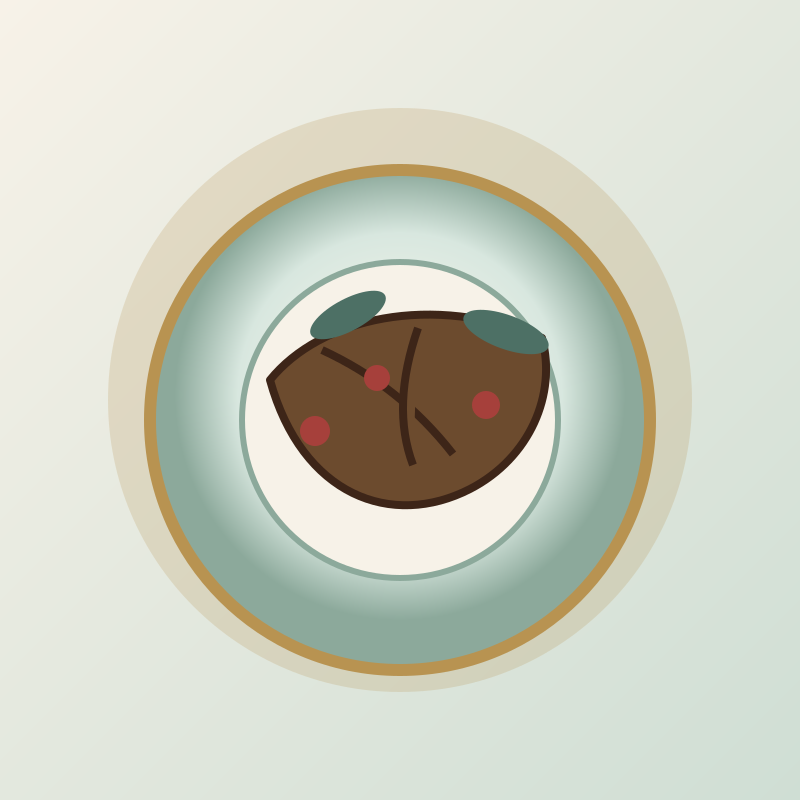

红楼梦饮食互动图鉴
从一道菜进入《红楼梦》的生活现场
Grand View Garden Food Box
这里的菜不只负责“好吃”。它们会带出贾府的排场、丫鬟的处境、亲密关系里的火气， 也会让第一次读《红楼梦》的人知道：生活细节，本来就是故事的入口。
随机开盒

茄鲞
刘姥姥尝到“茄子不像茄子”的贾府排场。
人物：刘姥姥、王熙凤 · 地点：大观园宴席
8 dishes
查看原文出处 ↗
此互动页面需要启用 JavaScript。请使用新版 Chrome 或 Edge 打开。